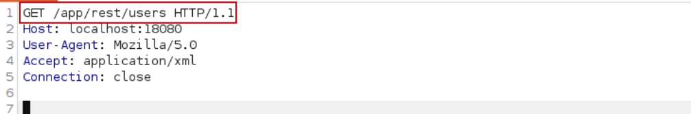

CVE-2024-27198
TeamCity
The altered route reached protected REST operations. The added method guard blocked the external administrator-creation request; bypassed reads remained available.
01
Evidence captures
Select a capture to enlarge it. The PDF link opens the source page.
Manual testing


Control experiments


02
Archive records
Each excerpt keeps its original experiment ID and source line. Correlate matching runs before comparing events.
Unauthenticated unsafe-method guard
{
"timestamp": "2026-10-16T14:17:08.677321+00:00",
"experiment_id": "CVE-2024-27198-mode-b-20261016T141537Z",
"security_mode": "mode-b",
"component": "dlp-gateway",
"role": "response",
"request_id": "CVE-2024-27198-mode-b-20261016T141537Z-teamcity-external-create",
"verdict": "block",
"reason": "unauthenticated_unsafe_method",
"policy": "authenticated_state_change",
"allow_prefixes": [
"/loginSubmit.html"
],
"method": "POST",
"path": "/hax",
"query_keys": [
"jsp"
],
"authorization_present": false,
"cookie_present": false
}Experiment: CVE-2024-27198-mode-b-20261016T141537Z
Exact JSON record ↗ · Full original archive ↗
Record SHA-256: 6ad44d0267ee4337bb721d76d2969de84a4fef0539fa357b0a12b7b5f1ebd3b9
Exact JSON record ↗ · Full original archive ↗
Record SHA-256: 6ad44d0267ee4337bb721d76d2969de84a4fef0539fa357b0a12b7b5f1ebd3b9
03
Advisories and published research
JetBrains
TeamCity authentication-bypass advisory ↗
Affected versions, initial fixed release and vendor response.
Vendor advisoryRapid7
TeamCity authentication-bypass research ↗
Researcher analysis of the alternate routing and its impact.
Original researchExternal publications provide context; the captures above document this project’s evidence.